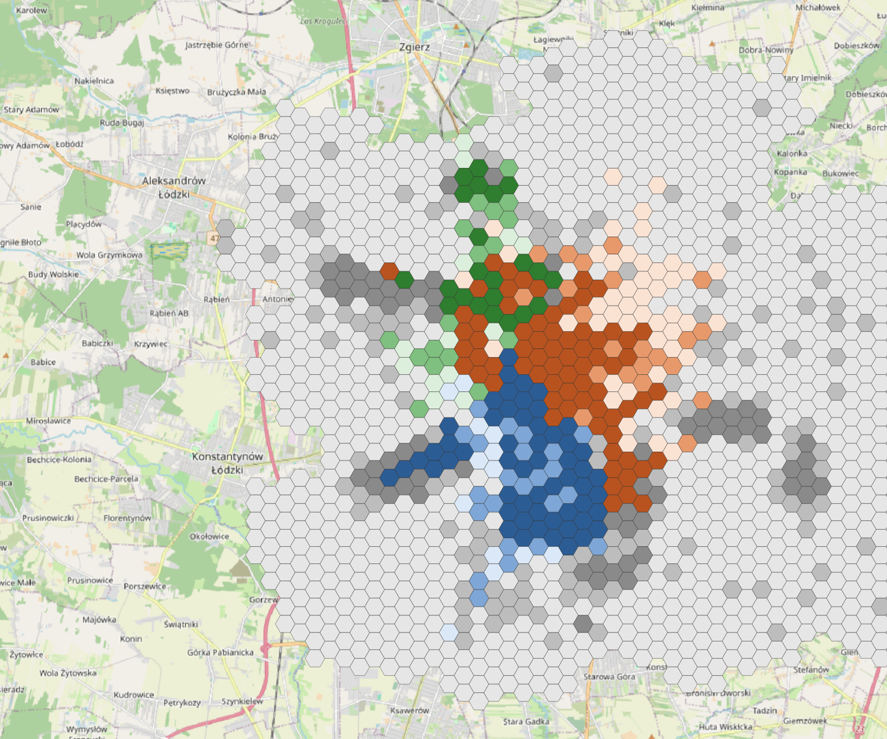
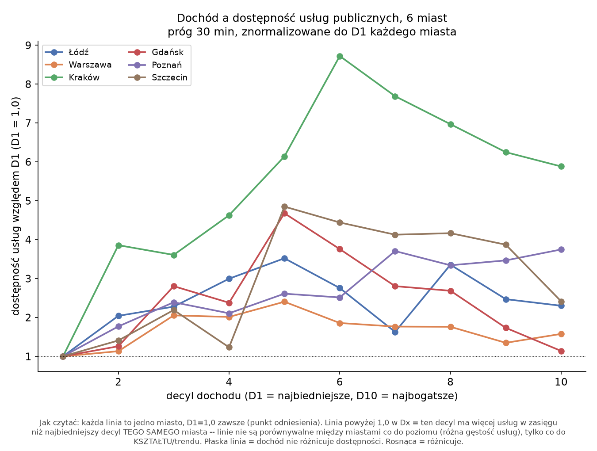
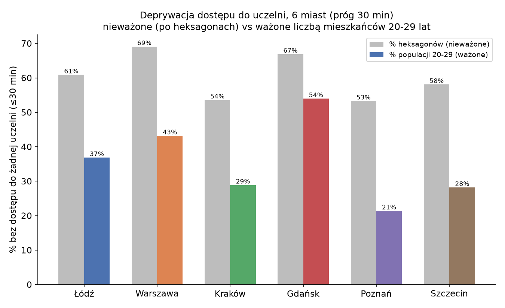

61% obszaru zamieszkanego przez studentów bez dostępu do uczelni w pół godziny: dostępność akademicka w 6 miastach
Uwaga: treść eksperymentalna. Ten wpis w całości wygenerowała AI (Claude) na podstawie mojego kodu i danych — to wstępna, robocza wersja, która ma pomóc mi rozeznać się w temacie, nie ostateczne wnioski badawcze. Liczby i interpretacje traktuj jako punkt wyjścia do dalszej weryfikacji, nie jako gotowy wynik.
W poprzednim wpisie sprawdziłem, że dostępność transportowa w Łodzi zależy głównie od odległości od centrum, nie od dochodu. Tu zawężam pytanie do konkretnej grupy i konkretnego celu: studenci i uczelnie. Zamiast całej populacji, liczę dostępność dla mieszkańców w wieku 20-29 lat (proxy studentów z GUS NSP2021), a zamiast usług publicznych, celem są budynki uczelniane. Najpierw w Łodzi, potem w pięciu kolejnych miastach: Warszawie, Krakowie, Gdańsku, Poznaniu i Szczecinie.
Dochód świadomie pomijam na tym etapie: pytanie nie brzmi „kto ma pieniądze", tylko „ile osób w ogóle da się tam dowieźć transportem publicznym w rozsądnym czasie".
Dane: budynki uczelni z OpenStreetMap
Budynki akademickie pobrałem z Overpass API (tagi amenity=university/college i
building=university), sklasyfikowane regexem po nazwie na konkretne uczelnie. W Łodzi to
dało 47 budynków: Uniwersytet Łódzki (24), Politechnika Łódzka (14), Uniwersytet Medyczny
(9). W pozostałych pięciu miastach lista uczelni jest dopasowana do lokalnych realiów, bo
nie każde miasto ma osobną politechnikę czy uczelnię medyczną:
| Miasto | Uczelnia 1 | Uczelnia 2 | Uczelnia 3 |
|---|---|---|---|
| Łódź | Politechnika Łódzka | Uniwersytet Łódzki | Uniwersytet Medyczny |
| Warszawa | Politechnika Warszawska | Uniwersytet Warszawski | Warszawski UM |
| Kraków | Politechnika Krakowska | Uniwersytet Jagielloński | (Collegium Medicum UJ: 0 trafień w OSM) |
| Gdańsk | Politechnika Gdańska | Uniwersytet Gdański | Gdański UM |
| Poznań | Politechnika Poznańska | UAM | UM im. Marcinkowskiego |
| Szczecin | ZUT | Uniwersytet Szczeciński | Pomorski UM |
Sieć drogowa: wyciągi wojewódzkie z Geofabrik, przycięte do bboxa miasta (osmosis, z
obowiązkową flagą completeWays=yes, o czym więcej niżej). Zrealizowany GTFS z
easy-GTFS-RT, wariant p50. Jednostka przestrzenna: heksagony 500 metrów, tą samą metodą
co w poprzednim wpisie.
Łódź: kto dojedzie, a kto nie
Zmienność w ciągu dnia
Pierwsze pytanie: jak bardzo dostępność do uczelni waha się w zależności od minuty wyjścia z domu. Policzyłem to na oknie 06:00–22:00 z pięcioma percentylami czasu przejazdu (r5r pozwala na maksymalnie 5 na jedno wywołanie). Rozrzut bezwzględny (najlepsze 5% minut kontra najgorsze 5%) wynosi średnio 12,4 budynku i jest większy w centrum, po prostu dlatego że tam jest z czego spadać. Rozrzut względny jest odrobinę większy na peryferiach (r=+0,16 z odległością od centrum), zgodnie z intuicją: rzadsza siatka transportu tam oznacza większe wahania.
Niezawodność dzień do dnia: dobry dzień kontra zły dzień
Druga metoda replikuje wprost podejście Bragi i in. (2026): porównanie dostępności na typowym dniu (p50) z dostępnością na dniu gorszym (p85, 85. percentyl zrekonstruowanego rozkładu). Różnica między nimi to wpływ niezawodności transportu, nie samej jego gęstości.
Wynik dla Łodzi: zły dzień obniża dostępność średnio o 32,7% (mediana −18,8%), i to peryferie tracą więcej niż centrum (r=−0,28 z odległością). Kierunek jest ten sam co w Fortalezie, tylko efekt jest wyraźnie słabszy, co pasuje do innej struktury miasta: Łódź ma biednych mieszkańców głównie centralnie, Fortaleza na peryferiach (patrz poprzedni wpis). To, że kierunek efektu (peryferie tracą więcej na niezawodności) powtarza się mimo odwróconej struktury dochodowej dwóch miast, sugeruje, że sam mechanizm niezawodności zależy od gęstości sieci transportowej, nie od tego, gdzie akurat mieszkają biedniejsi mieszkańcy.
Mapa: która uczelnia jest najbliżej i dla kogo

Mapa łączy dwie zmienne naraz: kolor (niebieski = Politechnika Łódzka, pomarańcz = Uniwersytet Łódzki, zielony = Uniwersytet Medyczny) pokazuje, która uczelnia dominuje w danym heksagonie (ma najwięcej budynków osiągalnych w 30 minutach), a odcień pokazuje tercyl gęstości populacji 20-29 lat. Szary to brak dostępu do którejkolwiek z trzech uczelni.
Trzy strefy wpływu są przestrzennie wyraźnie rozdzielone: PŁ dominuje na południu/południowym zachodzie (zgodnie z realną lokalizacją głównego kampusu), UŁ na północ i północny wschód od centrum, UM w małym klastrze na północnym zachodzie. Nakładają się słabo, więc student mieszkający w danej części miasta ma zwykle praktyczny dostęp tylko do jednej z trzech uczelni, nie do wyboru.
Najważniejsza liczba z tej mapy: 61% heksagonów z populacją studencką (390 z 640) nie ma dostępu do żadnej z trzech uczelni w 30 minut. Dla porównania: dostępność do jakiejkolwiek usługi publicznej dla całej populacji (poprzedni wpis) wynosiła 98,7% w tym samym progu. Dostępność do uczelni jest dużo bardziej przestrzennie ograniczona niż dostępność do usług ogółem.
Zobacz interaktywną wersję tej mapy → — wszystkie sześć miast naraz, z przełącznikiem między dominującą uczelnią, liczbą dostępnych uczelni i osobnym włączaniem/wyłączaniem każdej z nich.
Sześć miast: czy to się powtarza
Dochód znowu nie jest predyktorem
Ta sama korelacja dochodu z dostępnością do usług publicznych, co w poprzednim wpisie, policzona teraz dla wszystkich sześciu miast (heksagony, próg 30 minut):

| Miasto | r |
|---|---|
| Gdańsk | +0,018 |
| Warszawa | +0,042 |
| Łódź | +0,147 |
| Szczecin | +0,210 |
| Poznań | +0,225 |
| Kraków | +0,286 |
Wszystkie korelacje są dodatnie, nie ujemne, i słabe do umiarkowanych. Żadne z sześciu miast nie pokazuje wzorca „biedny = gorszy dostęp" w sposób, który dawałby silną korelację. Wniosek z pilotażu łódzkiego potwierdza się i uogólnia na wszystkie sześć miast: odległość od centrum tłumaczy dostępność wielokrotnie lepiej niż dochód, w każdym z sześciu sprawdzonych miast.
Która uczelnia wypada najsłabiej
We wszystkich miastach poza Poznaniem uczelnia medyczna ma najmniej heksagonów, w których dominuje (czyli najsłabszą przestrzenną dostępność). Prawdopodobne wyjaśnienie: uczelnie medyczne w Polsce mają zwykle mniejsze, rozproszone kampusy przy szpitalach klinicznych, nie jeden duży zwarty kampus jak politechniki czy uniwersytety ogólne. Mniej budynków w jednym miejscu oznacza mniejszy obszar, z którego którykolwiek z nich widać w progu 30 minut.
Ile osób naprawdę nie ma dostępu, i historia jednej korekty
Tu warto pokazać kuchnię, nie tylko wynik końcowy, bo w trakcie tej analizy znalazłem (a właściwie: zlecony przeze mnie niezależny audyt znalazł) realny błąd, i to jest dobry przykład na to, dlaczego warto weryfikować własne wyniki cudzym spojrzeniem.
Pierwsza wersja liczyła „% heksagonów bez dostępu do żadnej uczelni":
| Miasto | % heksagonów bez dostępu |
|---|---|
| Poznań | 53,3% |
| Kraków | 53,6% |
| Szczecin | 58,1% |
| Łódź | 60,9% |
| Gdańsk | 66,9% |
| Warszawa | 69,1% |
Stolica wypadła najgorzej, mimo największej bezwzględnej liczby budynków uczelni (48, najwięcej z sześciu miast). Wynik był na tyle nieintuicyjny, że zleciłem świeżemu agentowi, bez wcześniejszego kontekstu tej analizy, żeby to zweryfikował od zera: przeczytał dokumentację r5r, porównał ją z kodem, i sprawdził hipotezę, że wynik jest za wysoki, żeby był prawdziwy.
Dwa fałszywe tropy: hipoteza, że zrealizowany GTFS (a nie statyczny rozkład) zawyża wynik, odrzucona empirycznie: przeliczenie Łodzi na statycznym rozkładzie dało 61,2% zamiast 60,9%, różnica w granicy szumu. Hipoteza o błędzie strefy czasowej w kodzie R, odrzucona po sprawdzeniu dokumentacji r5r (pakiet celowo ignoruje strefę czasową obiektu R i używa strefy sieci transportowej).
Prawdziwy błąd: skrypt orkiestrujący całe przeliczenie miał zahardkodowaną datę, która okazała się być sobotą, nie dniem powszednim, dla pięciu z sześciu miast (tylko Łódź była liczona poprawnie, na dniu powszednim, od początku). Po poprawieniu daty i ponownym przeliczeniu wszystkich pięciu miast: zmiana rzędu 1-2 punktów procentowych (np. Warszawa 70,4% → 69,1%). Błąd był realny, ale nie był głównym powodem wysokiego wyniku, tak jak podejrzewał audytujący agent.
Druga korekta, tym razem metodologiczna, nie techniczna: metryka liczona po heksagonach traktuje jednakowo heksagon na peryferiach z jednym studentem i gęsty heksagon centrum z pięciuset. To sztucznie zawyża wynik szumem z rzadko zaludnionych obszarów brzegowych. Po zamianie na metrykę ważoną liczbą mieszkańców 20-29 lat:
| Miasto | % heksagonów (nieważone) | % populacji 20-29 (ważone) |
|---|---|---|
| Poznań | 53,3% | 21,4% |
| Kraków | 53,6% | 28,9% |
| Szczecin | 58,1% | 28,2% |
| Łódź | 60,9% | 36,9% |
| Warszawa | 69,1% | 43,2% |
| Gdańsk | 66,9% | 54,0% |
Realny obraz to 21-54% studentów bez dostępu do żadnej z 2-3 uczelni w 30 minut, nie 53-70% heksagonów. Nadal duży problem, ale wyraźnie mniej dramatyczny niż sugerowała pierwsza wersja. Kolejność miast też się zmienia: po ważeniu populacją to Gdańsk, nie Warszawa, wypada najgorzej, głównie dlatego że ma najmniej budynków uczelni ze wszystkich sześciu miast (37) w połączeniu z konkretnym rozkładem gęstości zaludnienia.

Ograniczenia
Populacja 20-29 lat jest dopasowana tylko do części heksagonów (point-in-polygon po
centroidzie obwodu, nie area-weighted overlay): od 35% w Warszawie do 48% w Krakowie.
Kraków ma faktycznie tylko dwie uczelnie w analizie, bo Collegium Medicum UJ nie jest
otagowane w OSM jako university/college. Warszawa nie została przeliczona po naprawie
błędu completeWays przy przycinaniu sieci OSM (patrz niżej), co daje marginalne ryzyko
niedokładności tuż przy granicy obszaru analizy. I wszystkie liczby z sześciu miast dotyczą
tylko poziomu dostępności w typowym porannym szczycie, bez metody A/C (niezawodność),
którą sprawdziłem tylko dla Łodzi.
Osobny gotcha techniczny, wart zapisania dla każdego, kto przycina dane OSM przez osmosis:
pierwsza próba przycięcia sieci do bboxa Krakowa (bez flagi completeWays=yes) wywaliła
budowę sieci w r5r (NullPointerException przy strefach parkingowych), bo zwykłe
--bounding-box obcina drogi na granicy, zostawiając wiszące referencje do węzłów spoza
wycinka. Nie zawsze crashuje: Warszawa i pierwsza próba dla Gdańska przeszły bez błędu,
zależnie od tego, czy akurat jakaś relacja przecina granicę bboxa. To błąd, który może się
nie ujawnić, dopóki nie trafi na odpowiednią kombinację danych.
Dane i kod
Pełny pipeline dla Łodzi: repozytorium
easy-R5, folder tools/accessibility_lodz/
(STUDENTS_ANALYSIS.md). Dla sześciu miast: folder tools/accessibility_cities/
(MULTI_CITY_ANALYSIS.md za wyniki, HOWTO_MANUAL.md za instrukcję odtworzenia całości od
zera, łącznie z zapytaniami Overpass i kodem R).
Interaktywna mapa (wszystkie 6 miast): gisboost.github.io/mapy-analizy/uczelnie-dostepnosc (kod: github.com/GISBoost/mapy-analizy).
To zamyka tę serię trzech wpisów, od dochodu, przez ogólną dostępność, po dostęp do uczelni. Otwarte kierunki na później: dostępność do miejsc pracy zamiast usług publicznych (wymaga REGON-u, na razie odłożone) i dokładniejsze dopasowanie dochodu do heksagonów.